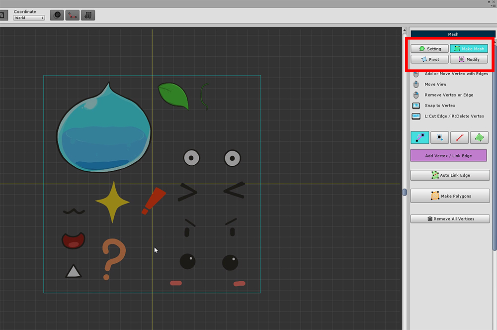
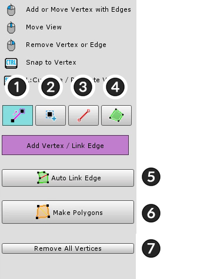
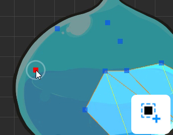
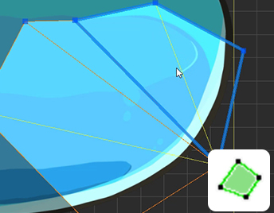
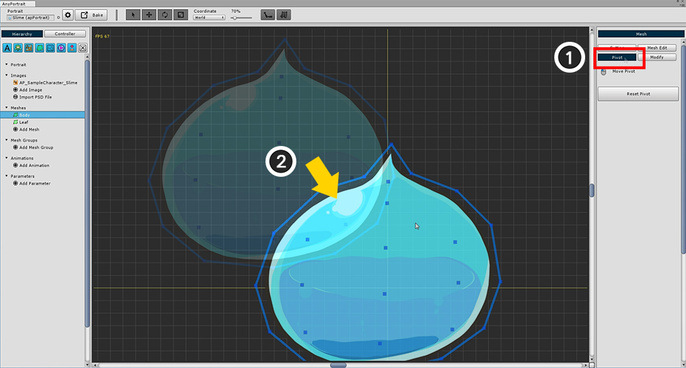

AnyPortrait > 入門ガイド > 1.3. メッシュの作成
1.3. メッシュの作成
1.0.0

Hierarchy UIで、(1) 「Add Mesh」ボタンをクリックし、生成されたメッシュを選択します。
メッシュを選択すると、右側の画面に 「Setting」、「Mesh Edit」、「Pivot」、「Modify」メニューが表示されます。
「Setting」メニューを選択して、(2) メッシュの「名前」を設定します。
(3) 「Change Image」ボタンを押して, (4) 作成した画像を選択し、(5) 「Select」ボタンを押します。

右側のUIで「Mesh Edit」メニューを選択します。
メッシュは、「Mesh Edit」メニューのツールを使用して作成できます。

メッシュを編集するためのツール。
追加または接続するには 左クリック します。
選択したオブジェクトを移動するには ドラッグ 。
右クリック をクリックして削除します。
1. 頂点+エッジツール : 頂点を追加すると自動的にエッジを接続します。
2. 頂点ツール : 頂点を追加します。
3. エッジツール : エッジを接続または回転させます。
4. ポリゴンツール : ポリゴンを選択します。 Delete キーを押して削除することができます。
5. Auto Link Edge : 自動的にエッジを接続します。
6. Make Polygons : すべての作業が完了したら、自動的にポリゴンを生成します。
7. Remove All Vertices : すべての頂点を削除します。
上記機能の詳細は以下の通りです。
（Mac OSXでは、 Ctrl キーの代わりに Command キーをショートカットとして使用します。）

1. 頂点+エッジツール
左クリック : 頂点を追加してエッジを接続する
ドラッグ : 頂点を移動する
右クリック : 頂点または辺を削除する
Ctrl+左クリック : 最も近い頂点にスナップ
Shift+左クリック : 交差点に頂点を作成する
Shift+右クリック : 頂点が削除されてもエッジは削除されません

2. 頂点ツール
左クリック : 頂点を追加する
ドラッグ : 頂点を移動する
右クリック : 頂点を削除する

3. エッジツール
左クリック : エッジの接続または回転
右クリック : エッジを削除
Ctrl +左クリック : 最も近い頂点にスナップ
Shift +左クリック : 交差点に頂点を作成する

4. ポリゴンツール
左クリック : ポリゴンを選択
Deleteキー : 選択したポリゴンを削除する

5. Auto Link Edge
ボタンを押すと、エッジが自動的に作成され、接続されます。
すべての頂点に接続するわけではありませんが、ポリゴンを簡単に作成できる機能です。
形状によっては、接続が奇妙な場合があります。 実行結果を確認してください。

6. Make Polygons
ボタンを押すと、ポリゴンは頂点とエッジに従って自動的に作成されます。
レンダリングする前にポリゴンを作成する必要があるため、この関数を実行する必要があります。
ポリゴンを作成した後でも、頂点を変更することができます。
計算された三角メッシュは黄色の線で表されます。
エッジツールを選択した後、この黄色のエッジラインをクリックすると、選択したエッジが回転します。
問題のポリゴンが発生した場合は、そのポリゴンを削除するか、頂点を削除して再度作業することができます。
上記の機能を使用して、スライムの本体を完成させます。

メッシュを作成するプロセスについては、ビデオチュートリアルで詳しく説明しています。
これで「Pivot」を修正する必要があります。
現在の状態では、メッシュの位置が原点ではないことがわかります。
メッシュの中心点は非常に重要です。なぜなら、「回転」または「ズーム」すると軸になるからです。

(1) 右のメニューから「Pivot」を選択します。 （この時点でポリゴンが作成されていない場合は、何も出力されません。）
(2) メッシュをグリッドの中心にドラッグします。
グリッドの原点はすぐにメッシュの中心点になります。

上記と同じ方法ですべての画像のメッシュを作成します。
（背景とイメージを区別できない場合は、設定ボタンを押して背景色を変更します。）